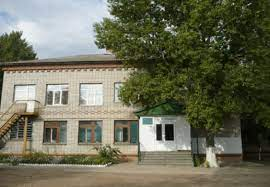

Elementary
My elementary school is called 'Secondary educational school of aesthetic direction' however, all the differences were some extra differen arts and music lessons and we had full day programe.
Middle
First half of my middle school years I spend in the same school I studied as elementary scholar and actualy could stay there until my very last school year, if only I would not go another school after 6th grade.